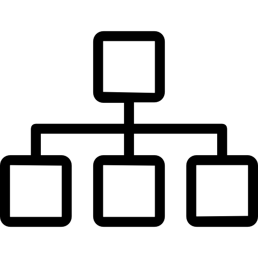

Writing Samples
Unified AI Platform User Guide
A step-by-step guide for setting up and managing ML models, tailored to developers and system administrators.
View SampleUnified AI Platform API Guide
API documentation for programmatically managing AI models, complete with code examples and troubleshooting information.
View SamplePersona-Based User Guide
Role-specific learning paths and architectural overviews designed to bridge the gap between business stakeholders and engineering execution.
View SampleiManager Installation Guide
A guide for installing and configuring iManager on various platforms.
View SampleShopping Portal User Guide
A user guide detailing how to create an account, update profile information, view products, and complete an order on the shopping portal.
View SampleConfiguring Agentforce
A technical guide detailing how to set up an AI Agent for citizen public services using Salesforce Agentforce.
View SampleMicrocopy Example
Interface microcopy samples that enhance user interactions within applications.
View SampleIn-App Help Sample
Examples of contextual in-app help content that improves the user experience.
View SampleAPI Documentation (Live)
Interactive API documentation rendered directly using Swagger UI to demonstrate endpoint usage and testing capabilities.
View Live APICase Studies

Content Strategy & Operations
After: Unified docs-as-code pipeline increasing production speed by 30%.
Docs-as-Code Implementation
After: Git-backed CI/CD integration with automated review pipelines.

Information Architecture
After: Real-time updates with task-based navigation.
Developer Experience (DX) Writing
After: Guided experience with recommended settings and progressive disclosure.